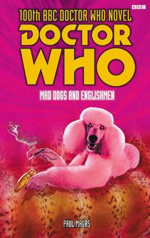

|
Mad Dogs and Englishmen
|
BASIC PLOT DOCTOR COMPANIONS MATERIALISATION CIRCUIT PREPARATORY READING CONTINUITY REFERENCES Pg 23 "I was hanging around this place in Kent [...] I had a house near there for a while, you see" The Doctor's house on Allen Road is near Kent. (But see Continuity Cock-Ups) Pg 51 "Unkind critics have pointed out over the years that what it most resembles is three washing-up liquid bottles and a broken hair dryer glued together and spray-painted silver." Just like so many space stations on TV. Pg 72 "A deep reassuring, avuncular voice assured them that they were, indeed, watching BBC three on Christmas Day" BBC3 was in The Daemons and has been mentioned in the NAs. Pg 84 "The Slaves of Sutekh" This might be a reference to the Pyramids of Mars, but it might not be. Pg 91 "'You said you came from a great distance?' He looked as if someone had stepped on his grave. [...] 'Little place in the South of Ireland. [...] It begins with a "G"'" The Doctor has the odd flash that something terrible happened to his home. The jokes about Gallifrey being in Ireland featured in the Tom Baker era. Pg 101 Reference to Dave (Escape Velocity). Pg 108 "And then, of course, there was Miranda to look after." Father Time. Pg 124 "She had a sudden flashed image of herself being carried off in the arms of a man turning into a giant wasp." Eater of Wasps. Pg 126 "She outstared a particular orange and greenish creature, covered in suckers, which she took to be somekind of alien." It's a model of a Zygon (Terror of the Zygons). Pg 130 "And I am writing a fantasy... a novel about... um, terrible shape-shifting aliens who have lived beneath Loch Ness for millions of years." Terror of the Zygons. Pg 149 "There is a world where the creatures who live thereare building perfect replicas of English villages from plastic [...] And they are sending automata in coffins to crash land on the earth and, um, well one of these goes wrong and he's a creature of shreds and patches with a brain in a glass case instead of a head and... um, he's possessed by a gigantic spider that attaches itself to his back and..." The Android Invasion, The Brain of Morbius, Planet of the Spiders. "He's writing this wonderful epic poem about silver Vikings who are frozen in a tomb..." The Tomb of the Cybermen. Pg 172 "The Doctor grew defensive of antiquated trains: one of his earliest memories was of waking on just such a train as this." The Ancestor Cell. Pg 173 "And what is the esteemed Professor Challenger up to?" I think Professor Challenger was mentioned in several NAs "And then he drilled that colossal pit into the centre of the world, just so he coul prove he could make the whole earth scream, because it was alive or something, or so he reckoned..." Inferno. Pg 174 "He's on the trail of an evil genius, Fu Manchu" This might be a reference to The Talons of Weng Chiang. "Challenger seems to have gone the way Holmes went, towards the end." The Doctor met Sherlock Holmes in All-Consuming Fire. "That business with the artefacts from Peru...? Years ago?" Uncertain reference. Pg 176 "Mock Turtle Soup" There was a Mock Turtle in The Scarlet Empress. Pg 180 "'How could you forget me? Even for a moment? I'm rather hurt, Fitz.' 'It's... uh, been a tough time lately. Trying to hang on to ancient history and so on.'" Fitz's ailing memory problems began in Escape Velocity. Pgs 180-181 "I didn't think you were around any more... I thought, everything had changed" The Ancestor Cell. Pg 191 "'I was expecting Limehouse,' the Doctor frowned" Talons of Weng Chiang? Pg 195 The Doctor performs Venusian aikido, as the third Doctor often did. Pg 226 "'I came and stayed with you for a while,' she said. 'In the nineteen-eighties.'" This is a reference to a short story by Lance Parkin in Missing Pieces, set during Father Time, although Iris was in a different incarnation then. OLD FRIENDS AND OLD ENEMIES NEW FRIENDS AND NEW ENEMIES Mida Slike.
CONTINUITY COCK-UPS PLUGGING THE HOLES [Fan-wank theorizing of how to fix continuity cock-ups] FEATURED ALIEN RACES Mr Brewster, a species of sentient wild boar. Professor Jag, a sentient aphid. A rock-like alien at the conference. FEATURED LOCATIONS IN SUMMARY - Robert Smith? |
|
 |